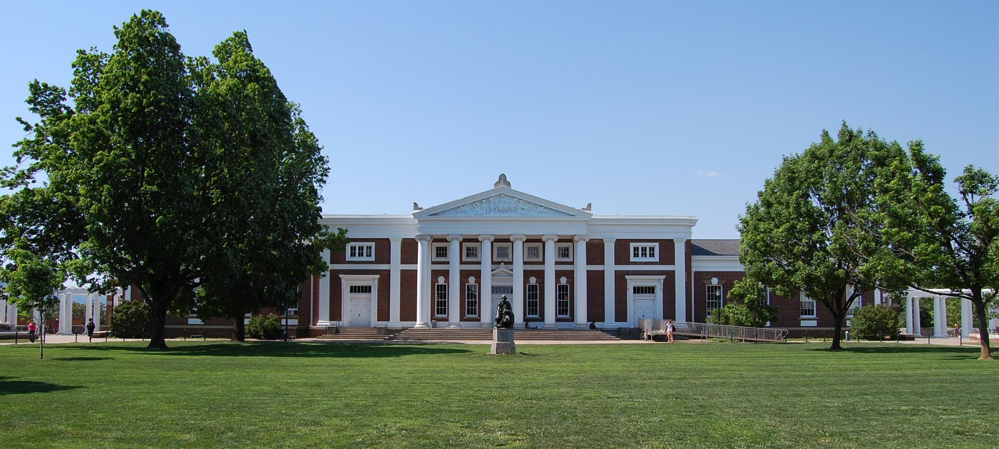

Practices
South Lawn
Practices are typically held on the South Lawn, on the opposite end, of the Rotunda, at UVA, typically every Wednesday. The time and day of the week of practices is variable and changes on a semester basis. For information regarding practices please refer to the GroupMe or reach out to Santiago or Colin with questions. Typically, there's will be three to five (or more) lines setup at each practice ranging from beginner to advanced. All are welcome to join. No experience is necessary and beginners are strongly encouraged to participate and come hang out. Don't let the word "practice" scare you away. We will have music, hacky sacks, juggling balls, music, blankets and lots of good times.
Other Practices
Ocassionally practices will be held at different locations and times, such as on the weekend. These logisitics will be communication in the GroupMe and are often impromptu. Members are free to post messages about slacklines that are set up at any time.